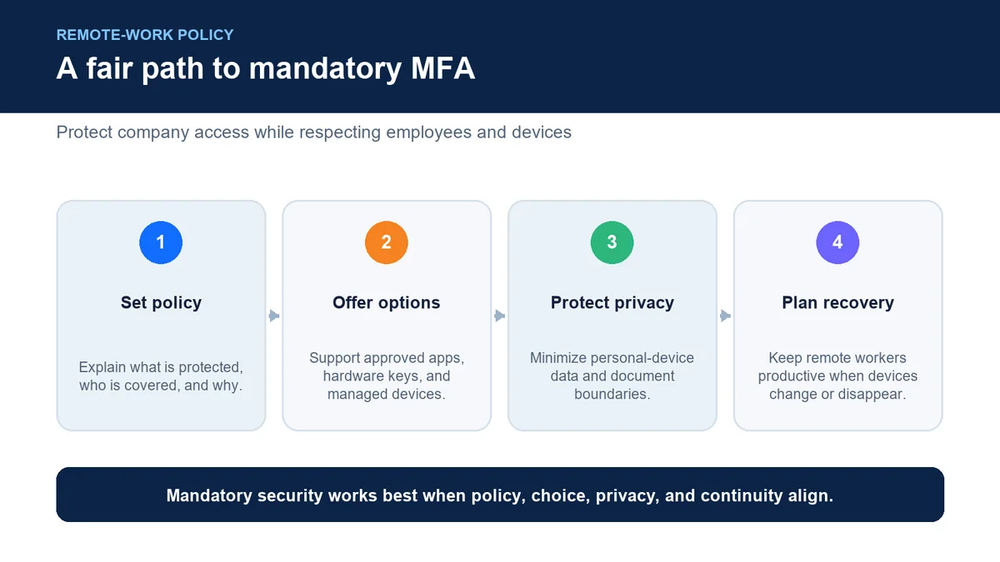
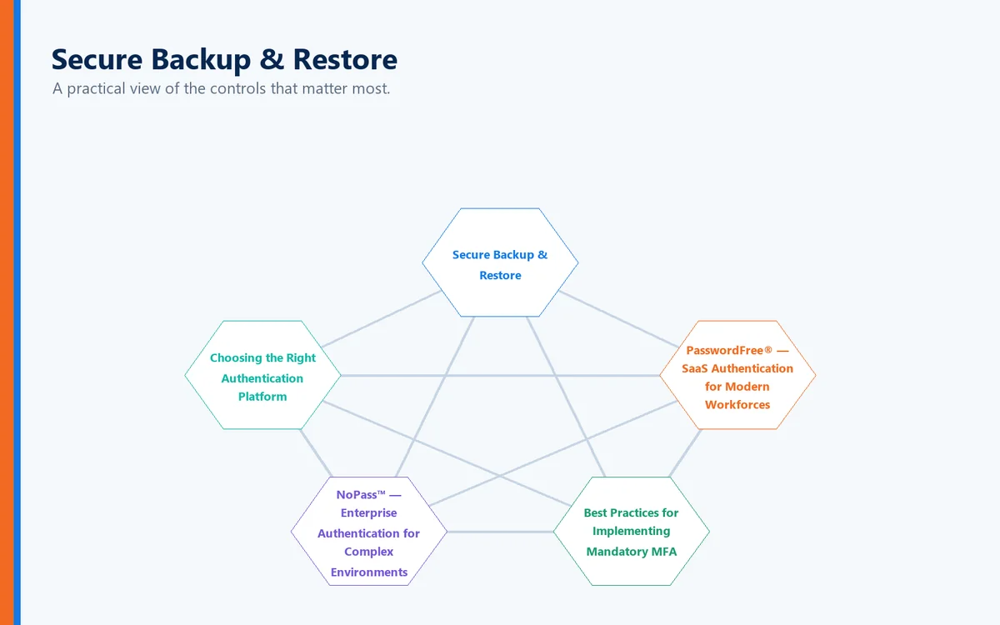

Generally, organizations can require MFA as a condition of accessing company systems.
Employers have legitimate responsibilities to protect:
Customer information
Intellectual property
Financial data
Employee records
Corporate applications
Regulatory-controlled information
MFA requirements are increasingly viewed as a reasonable cybersecurity measure, especially for:
Remote employees
Privileged administrators
Cloud application users
Employees accessing sensitive data
However, organizations should implement MFA requirements through clear policies and thoughtful deployment practices.
Why Remote Work Makes MFA More Important
Remote work expands the attack surface.
Employees may connect from environments outside the organization's direct control.
Cybercriminals increasingly target remote workers through:
Phishing attacks
Credential theft
Password reuse
Business email compromise
Social engineering
Malicious remote access attempts
A stolen password alone should not be enough to access company resources.
MFA adds additional identity verification, making compromised credentials significantly less valuable to attackers.
Legal and Policy Considerations for Mandatory MFA

Although organizations typically have the authority to require MFA, several considerations should be addressed.
1. Create a Clear Acceptable Use and Security Policy
A successful MFA requirement should be documented.
Policies should explain:
Why MFA is required
Which systems require MFA
Who must use MFA
Approved authentication methods
Employee responsibilities
Recovery procedures
Support processes
Employees are more likely to adopt security measures when they understand the purpose behind them.
The message should not be:
"IT is forcing another security step."
The message should be:
"This protects our employees, customers, and business operations."
2. Consider Personal Device Requirements
One of the most common concerns involves personal smartphones.
Employees may ask:
"Can my employer require me to use my personal phone for MFA?"
The answer depends on factors such as:
Local employment laws
Company policies
Employment agreements
Industry regulations
Reimbursement requirements
Even when permitted, requiring personal devices may create challenges involving:
Privacy concerns
Employee resistance
Device replacement
Accessibility issues
Work-life separation
Organizations should consider whether authentication truly needs to depend on an employee's personal device.
Modern authentication platforms provide alternatives.
3. Provide Multiple Authentication Options
A strong MFA policy should not assume every employee has the same technology environment.
Employees may:
Not own smartphones
Work in restricted environments
Have accessibility requirements
Travel frequently
Work in secure facilities
A mature authentication strategy provides flexibility.
Options may include:
Passwordless authentication
Biometrics
Hardware security keys
Enterprise devices
Trusted authentication profiles
Emergency recovery methods
The goal is identity assurance—not forcing a single device model.
4. Address Employee Privacy Concerns
Employees sometimes worry that authentication applications allow employers to access personal information.
Organizations should clearly communicate:
What information is collected
What the authentication application can and cannot access
Whether personal data is visible
How authentication information is protected
Transparency builds trust.
Mandatory MFA Should Not Mean Mandatory Disruption
One of the biggest mistakes organizations make is implementing MFA without considering user experience.
Poorly designed MFA deployments create:
Login frustration
Increased help desk calls
Employee resistance
Reduced productivity
The best security solutions protect users without interfering with their ability to work.
Moving Beyond Phone-Based MFA
Many organizations begin their MFA journey with:
SMS codes
Authenticator applications
Push notifications
These methods provide valuable protection.
However, they also introduce challenges:
Lost phones
Device replacement
Authentication migration
Enrollment issues
Recovery delays
This is where passwordless authentication changes the conversation.
Built for Remote Work Business Continuity
Remote employees need authentication that works wherever they are.
Phones are lost.
Devices break.
Employees travel.
Hardware changes.
A modern authentication strategy must anticipate these situations.
Authentication powered by Full Duplex Authentication® provides multiple ways to maintain secure access.
Passwordless Authentication
FDA removes password dependency while improving protection against:
Phishing
Credential theft
Password reuse attacks
Account takeover
Employees gain faster access while organizations reduce password-related risks.
Emergency PIN Authentication
When organizational policy permits, authorized users can securely authenticate using an Emergency PIN when their primary authentication device is unavailable.
For remote workers, this can be especially valuable.
Examples:
A laptop is available, but a phone is lost.
An employee is traveling without their primary device.
A replacement phone is being activated.
Instead of losing access, employees have a secure recovery path.
Secure Backup & Restore

Device replacement should not become an authentication crisis.
Organizations using PasswordFree® or NoPass™ can enable authentication profile backup to:
Secure cloud storage
Corporate network infrastructure
When a user receives a replacement device, they can restore their authentication profile.
In many cases, users can be operational again in less than two minutes.
This reduces:
Employee downtime
Help desk workload
Administrative overhead
Choosing the Right Authentication Platform
Different organizations have different requirements.
PasswordFree® — SaaS Authentication for Modern Workforces
Organizations seeking rapid deployment often choose PasswordFree®, Identité's Software-as-a-Service authentication platform.
PasswordFree® provides:
Passwordless authentication
Simplified deployment
Reduced password dependency
Secure recovery options
Emergency PIN Authentication
Backup & Restore capabilities
Improved remote worker productivity
NoPass™ — Enterprise Authentication for Complex Environments
Large organizations often require deeper integration and greater control.
NoPass™, powered by Full Duplex Authentication®, supports:
Microsoft Active Directory
Microsoft Entra ID
Microsoft 365 / Office 365
Microsoft Azure
On-premises deployment
Customer-controlled cloud environments
Many financial institutions, healthcare organizations, government agencies, and other regulated enterprises prefer NoPass™ because it allows greater control over authentication infrastructure and sensitive identity data.
Best Practices for Implementing Mandatory MFA
Organizations should:
Communicate MFA requirements early.
Explain the security reasons behind the policy.
Provide employee training.
Offer multiple authentication options.
Avoid unnecessary dependence on personal devices.
Establish recovery procedures before rollout.
Test Backup & Restore processes.
Define Emergency PIN procedures.
Monitor user experience after deployment.
Mandatory security does not have to mean mandatory frustration.
The Identité Perspective
The question is not whether companies can require MFA for remote work.
The more important question is:
"Can organizations implement mandatory authentication requirements while respecting employees and maintaining productivity?"
The answer is yes.
Modern authentication should protect organizations without creating unnecessary barriers for the people who keep them running.
That's the philosophy behind PasswordFree® and NoPass™, powered by patented Full Duplex Authentication®.
By combining passwordless authentication with Emergency PIN Authentication, Secure Backup & Restore, and flexible deployment options, organizations can enforce strong security policies while ensuring remote employees remain productive.
Because the future of authentication is not simply controlling access.
It is enabling secure access—anywhere, anytime, without slowing the business down.